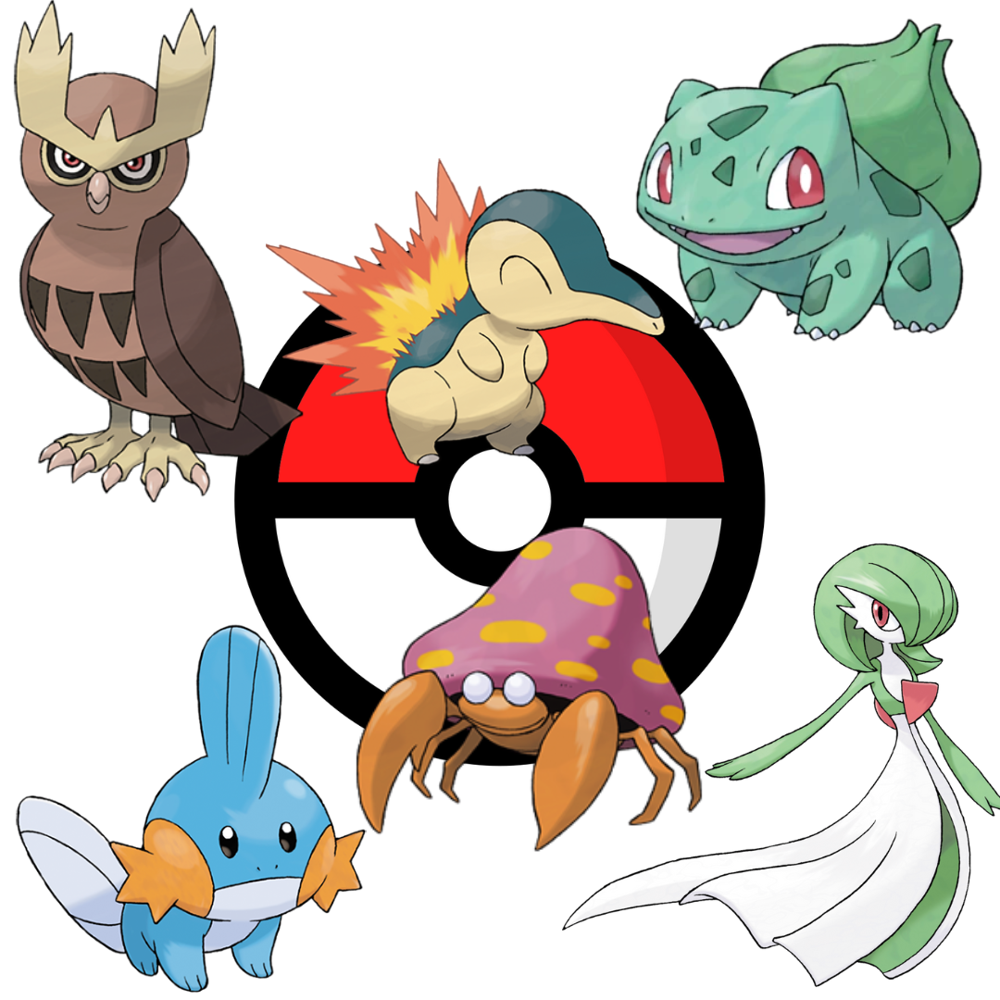

| Mis pokemon favoritos |
- Bulbasaur
- Cyndaquil
- Mudkip
- Parasect
- Gardevoir
- Noctowl
|
 |
| Mis Juegos de Gameboy favoritos |
- Pokémon O/P/C
- Harvest moon
- Kirby's Dream Land
- Perfect Dark
- TLOZ: Alink to the past
|
|
| Mis hentais favoritos |
- Shoujo ramune
- Tres chicas pasan un hermoso verano
- Onii chichi
- El amor de familia lo puede todo
- Tiny Evil
- Incluso los demonios pueden sentir amor
- Eroge!
- Ls sorpresas que uno se lleva al iniciar un trabajo
- Kanojo x Kanojo x Kanojo
- Tres hermanas encuentran un hobbie en común
|
|
Click para ir a la pagina principal